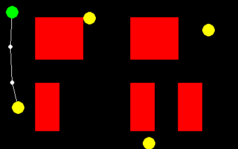

Developed the RRT path planning algorithm for 6 DOF robot manipulator arm - URe10 from scratch. The work space was sampled and graphed based on URe10 configuration space.
The exploring tree is built application specific (pick and place) to obtain a quicker path to goal. Thus, joint limits were tuned to reach a predefined work space.

Implemented a motion planning model based on GoogLeNet architecture, trained on the Lyft's Planning and Prediction Dataset. The model is capable of planning the motion of the ego vehicle
abiding to it's various contraints.
The base model is a GoogLeNet model that is pretrained. It is customized with multiple Fully Connected convolution layers at the output to meet the requirements.
The input layer is also customized to match the output size of the rasterizer.

In this project, a 3D environment was converted into a 2D map to run a simple search based path planner.
A star path planner calculates the optimal path by using the RPMs of the two wheels of the TurtleBot3 Burger robot as action set parameters.
A publisher sends the RPM values to a simulated robot to navigate to the desired goal in the 3D gazebo environment.

Developed and implemented a PRM planner for warehouse wheeled robots. The robots have to collect/place different items from various sections within the warehouse.
The developed PRM path planner uses a novel heuristic function called A* distance to find optimal path between two consecutive target locations. The final optimal path
with each target/item location is obtained by solving Traveling Sales-person Problem (TSP).

In this project, a 3D environment was converted into a 2D map to run a simple search based path planner, the Dijkstra algorithm. The action sets are based on the directions
the robot can take {Forward, Backward, Left, Right}. obstacles in the generated map are enlarged according to robot dimensions to avoid collision.

A customized googLeNet model that performs motion prediction for all agents visible to the ego vehicle at a given point in time.
The trained model predicts 5 seconds into the future. It is trained on Lyft's motion prediction dataset.

In this project the search and rescue mission aiding robots were simulated.
Two turtlebot3 robots were simulated in a custom Gazebo environment. One robot acts as an explorer that autonomously navigates to multiple
target locations and scans for civilians (enacted by fiducial markers, AruCo tags). The second robot is the rescuer which autonomously
navigates to detected civilians in a prioritized order to aid and rescue them.